Central de ajuda
Tutoriais curtos para as dúvidas mais comuns. Cada um leva direto para a tela certa.
Primeiros passos
Como criar e publicar a primeira pesquisa Com imagens
Leva uns 5 minutos. As imagens são do painel de demonstração, com dados de exemplo.
-
No menu, abra Pesquisas e clique em Nova pesquisa, no canto de cima.
-
Em Sobre a pesquisa, dê um nome e marque as unidades. Cada unidade ganha o próprio link e QR Code, que aparecem embaixo.
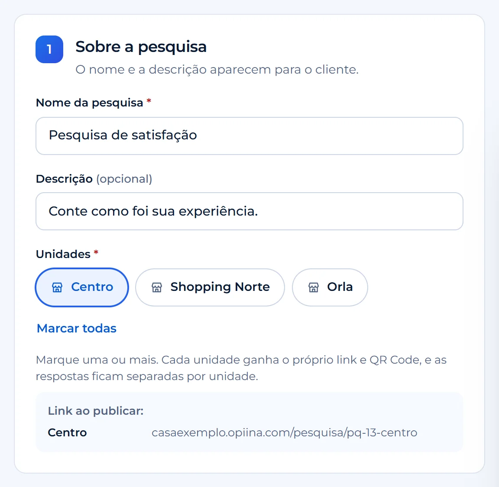
-
Em Perguntas, a primeira é a nota de recomendação (NPS). Para incluir mais, use Adicionar pergunta ou clique numa das sugestões e escolha o tipo de resposta.
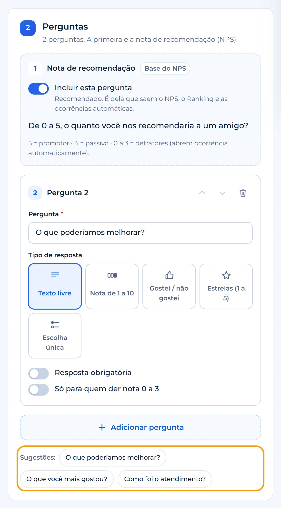
-
Em Atendente e contato do cliente, escolha se a pesquisa pergunta quem atendeu e se pede nome e contato (o cliente pode pular, a não ser que você ligue Tornar obrigatório).
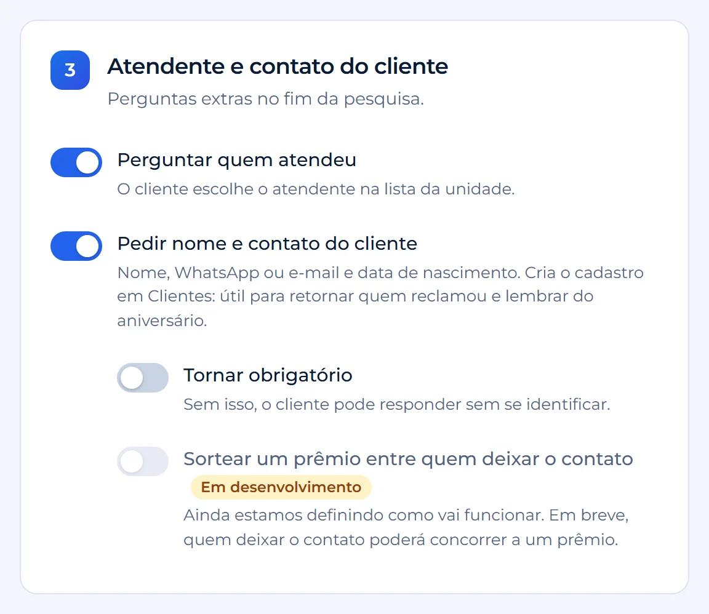
-
Confira na prévia Como o cliente vê, ao lado do formulário. Dá para clicar e responder como se fosse o cliente; nada é enviado.
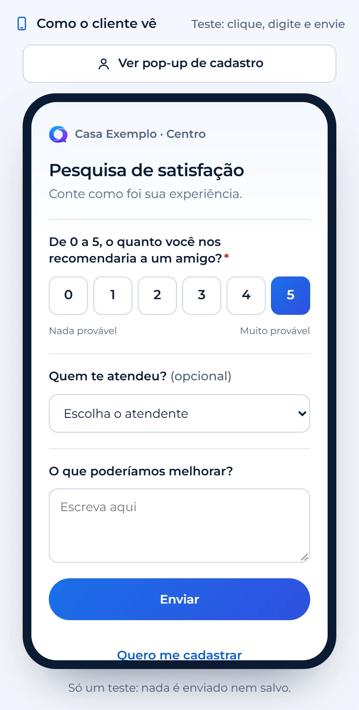
-
Clique em Publicar (na barra de baixo), confira o resumo, marque "Revisei a pesquisa e a prévia" e publique.
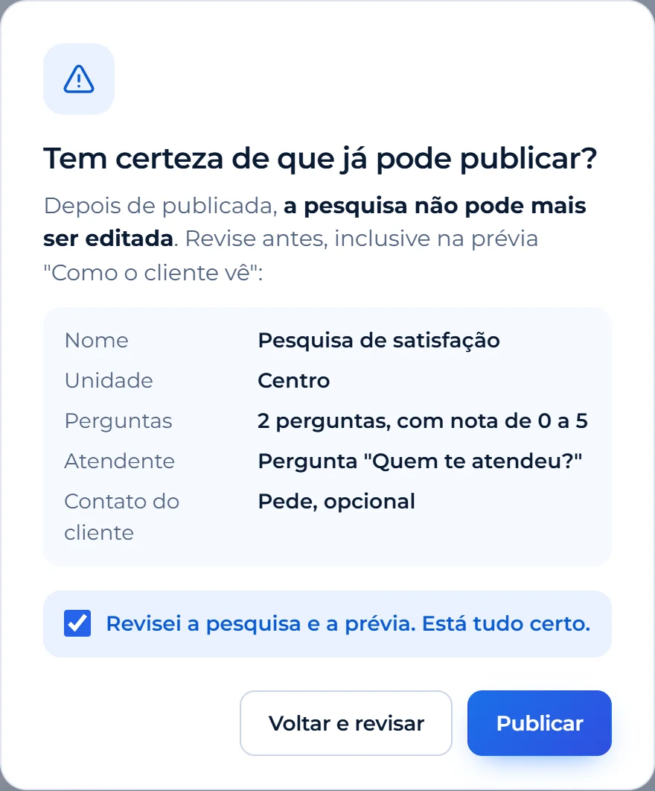
Depois de publicada, a pesquisa não pode mais ser editada. Até lá, use Salvar rascunho. Para levar ao cliente, veja como pegar o link e o QR Code.
Criar uma pesquisaComo pegar o link e o QR Code de cada unidade Com imagens
-
Em Pesquisas, encontre a pesquisa publicada e clique em Links. Para ir direto a uma unidade, clique no nome dela, logo acima.
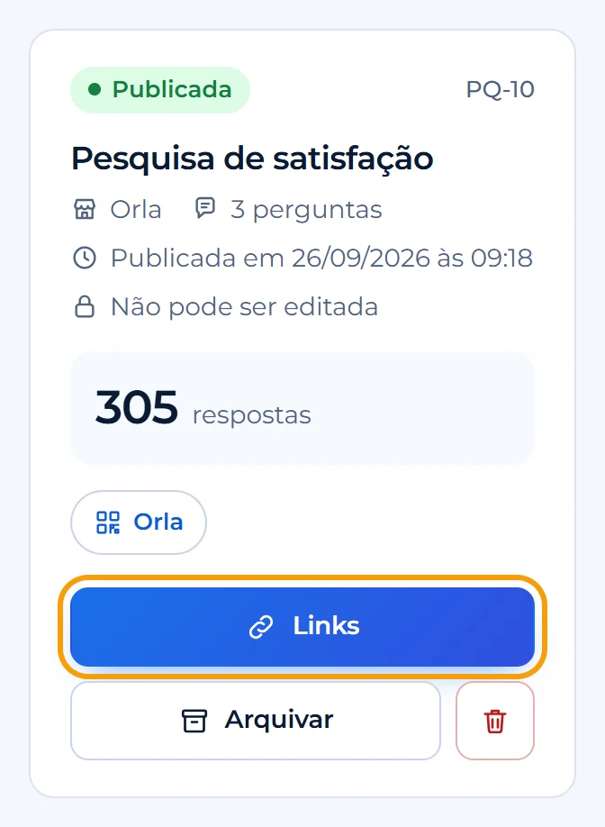
-
Na janela Links da pesquisa, use Copiar link para mandar por mensagem ou Baixar QR Code (PNG) para imprimir. Com várias unidades, escolha a unidade no topo da janela.
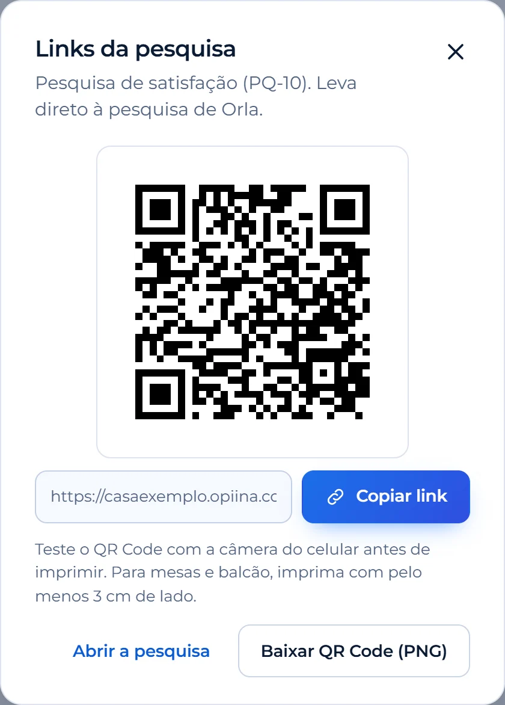
Cada unidade tem o próprio link, e as respostas ficam separadas. Teste o QR Code com a câmera do celular antes de imprimir e imprima com pelo menos 3 cm.
Ir para PesquisasComo cadastrar os atendentes Com imagens
-
Abra Configurações › Atendentes e clique em Novo atendente. Para cadastrar vários de uma vez, use Importar planilha (CSV com Nome, Código e Cargo).
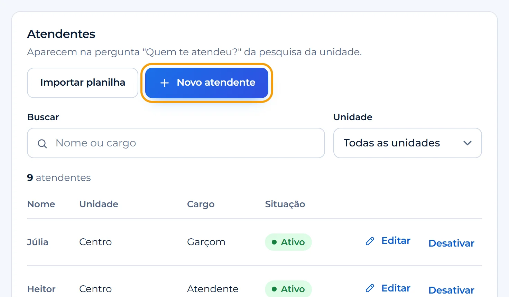
-
Escolha a unidade, escreva o nome como o cliente vai ver e, se quiser, o cargo e o código. Clique em Adicionar.
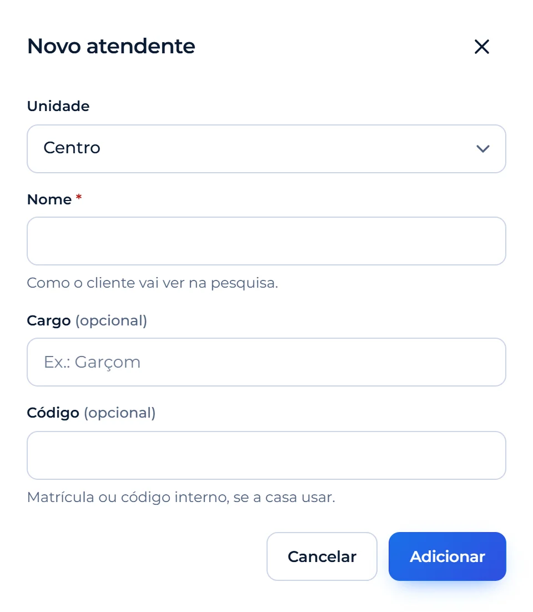
Os atendentes aparecem em "Quem te atendeu?" na pesquisa da unidade e entram no Ranking de atendentes.
Ir para AtendentesAtendimento
Como tratar um feedback que pede ação Com imagens
-
Em Feedbacks, escolha Precisa de ação no filtro Tratamento. Os feedbacks que pedem ação têm uma barra azul à esquerda e, embaixo, a etapa, o responsável e o prazo. Clique em Tratar.
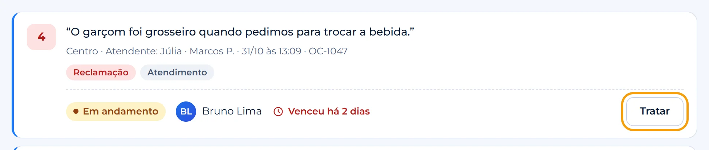
-
Na gaveta, mude a Etapa, escolha o Responsável e, se quiser, escreva uma anotação interna (o cliente não vê). Clique em Salvar. O histórico fica embaixo.
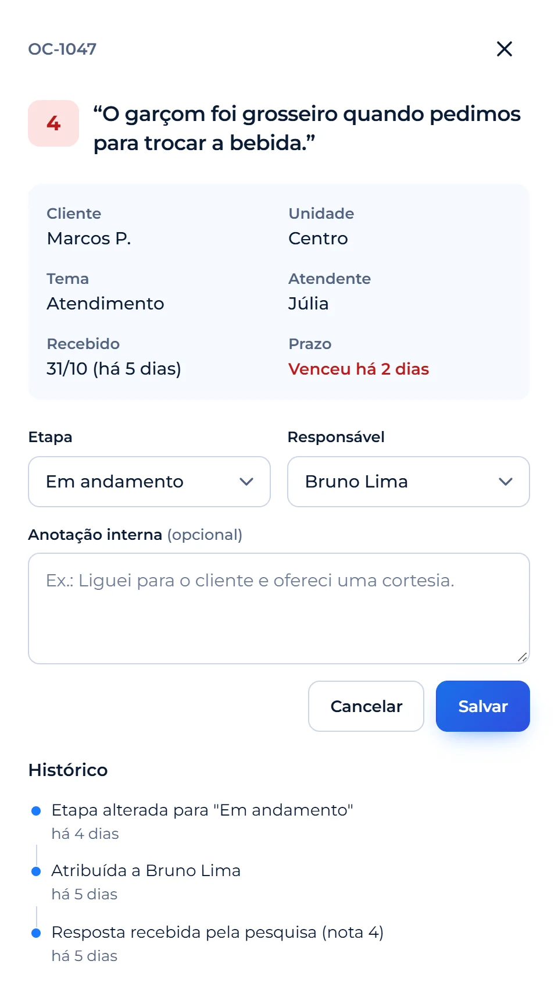
Feedbacks vencidos aparecem em vermelho e somam no número ao lado de Feedbacks, no menu. Para ver tudo em colunas por etapa, use Kanban no topo da tela.
Ver o que precisa de açãoComo ver os casos em colunas (Kanban)
- Em Feedbacks, clique em Kanban no topo.
- Cada coluna é uma etapa: Nova, Visualizada, Em andamento, Aguardando cliente e Resolvida.
- Clique num cartão para abrir o tratamento e mudar a etapa.
Como divulgar o canal de denúncias para a equipe
- Abra Denúncias e clique em Divulgar o canal.
- Copie o link ou baixe o QR Code.
- Coloque nos murais, no vestiário ou no grupo da equipe.
Quem denuncia escolhe se quer se identificar, e cada relato recebe um protocolo.
Ir para DenúnciasAvaliações (Google, iFood, Tripadvisor)
Como conectar o Google Com imagens
-
Abra Configurações › Integrações. Em Plataformas de avaliação, na linha do Google, clique em Adicionar conta.
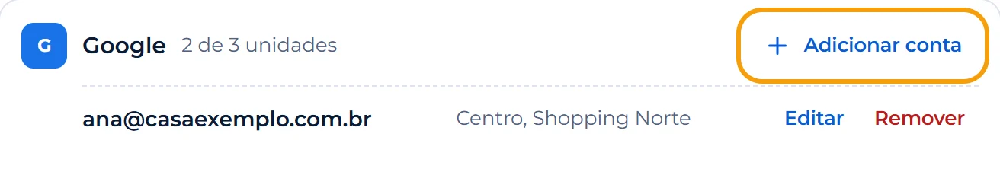
-
Clique em Entrar com o Google. Use a conta que administra o Perfil da Empresa e clique em Permitir.
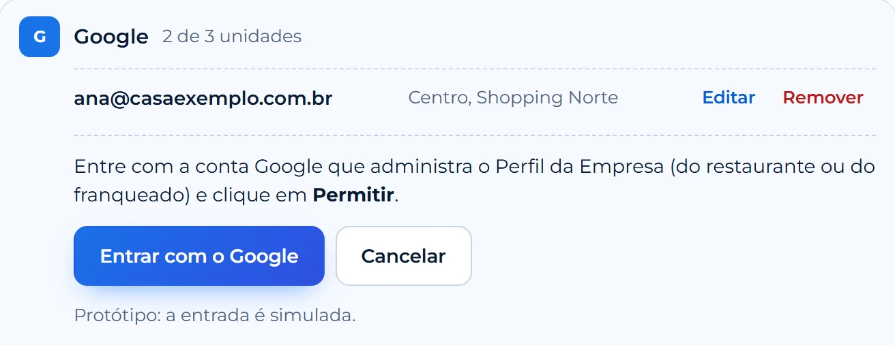
-
Marque as unidades desta conta e clique em Salvar. As unidades que já estão em outra conta aparecem apagadas.
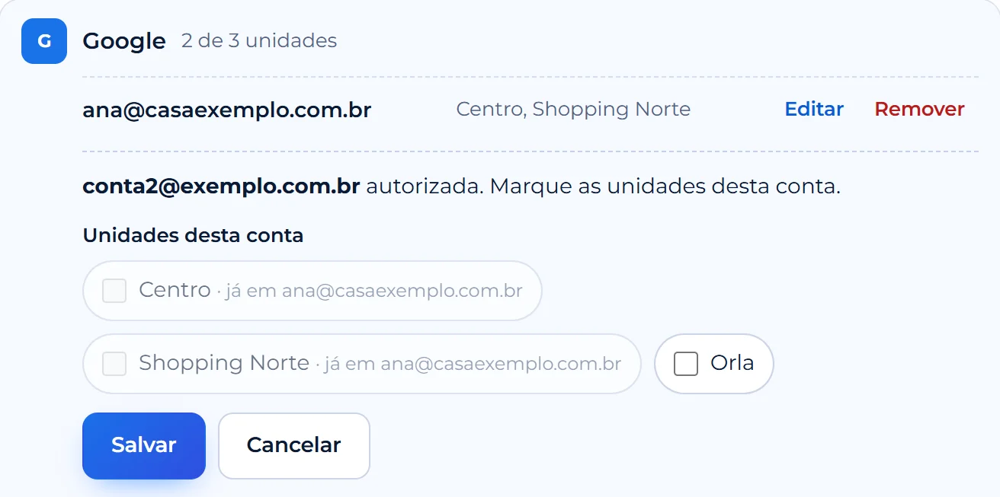
Você só autoriza uma vez: depois disso, a conexão fica ativa sozinha.
Ir para IntegraçõesComo conectar o iFood Com imagens
-
Em Configurações › Integrações, na linha do iFood, clique em Adicionar conta e copie o código que aparece. No Portal do Parceiro iFood da loja, cole o código e clique em Autorizar. Depois, volte ao Opiina e clique em Já autorizei.
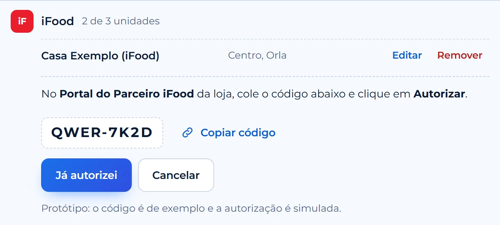
-
Marque as unidades dessa loja e clique em Salvar.
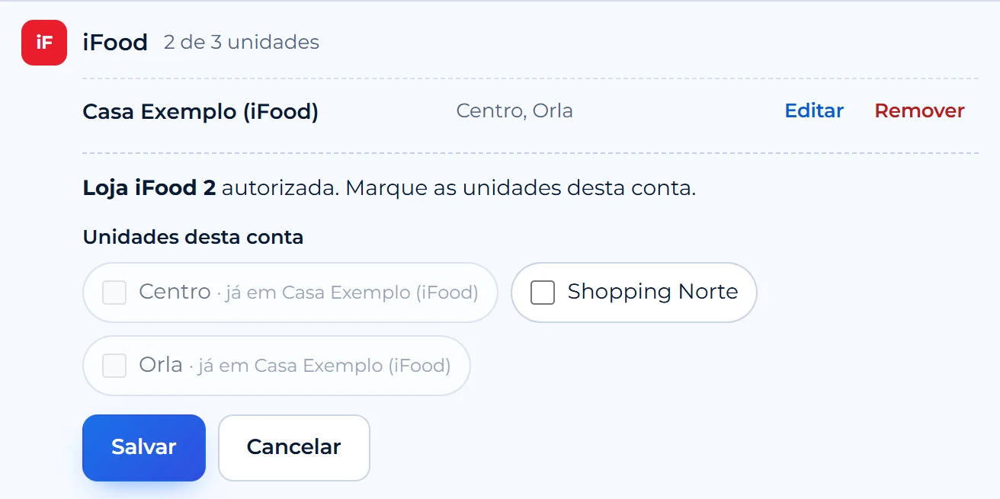
Tenho franquias: como ligar a conta de cada franqueado?
- Em Configurações › Integrações, clique em Adicionar conta uma vez para cada conta (Google ou iFood).
- Em cada conta, marque só as unidades daquele franqueado.
Uma unidade fica em uma conta só por plataforma. Se ela já estiver em outra conta, aparece com "já em [conta]".
Ir para IntegraçõesPor que uma avaliação nova ainda não apareceu?
As avaliações ficam guardadas e se atualizam sozinhas: Google e iFood a cada 6 horas, Tripadvisor uma vez por dia. Para buscar antes, use Atualizar agora no topo da aba Avaliações (libera de novo a cada 15 minutos).
Ir para AvaliaçõesEquipe, conta e plano
Como convidar alguém da equipe e escolher o perfil Com imagens
-
Abra Configurações › Usuários e perfis e clique em Convidar usuário.
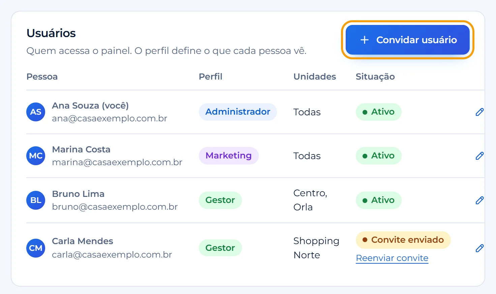
-
Informe nome e e-mail, escolha o perfil (cada cartão diz o que a pessoa vai ver) e as unidades. Clique em Enviar convite: a pessoa recebe um e-mail e cria a própria senha.
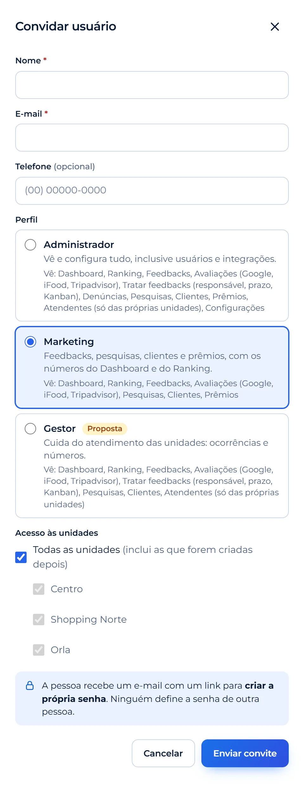
A tabela "O que cada perfil vê", na mesma tela, mostra o que cada perfil acessa.
Ir para UsuáriosComo trocar meu nome, e-mail, celular ou senha
- Abra Configurações › Minha conta (ou clique no seu nome, no rodapé do menu).
- Altere os dados e salve. Para trocar a senha, use Trocar senha.
Trocar o e-mail pede a senha atual e só vale depois de confirmar pelo link enviado ao novo endereço.
Ir para Minha contaComo funciona o teste grátis de 7 dias
- O teste começa no dia do cadastro. A faixa no topo do painel mostra quantos dias faltam.
- Na véspera do fim, aparece um aviso. No último dia, o painel só continua com um plano escolhido.
- O pagamento é feito na página da Stripe. Sem plano, a conta fica inativa.
Como exportar a lista de clientes
- Em Clientes, clique em Exportar.
- Escolha quem entra (a lista filtrada, só quem aceita ofertas ou todos) e o formato.
O arquivo tem dados pessoais: use só para o que o cliente autorizou.
Ir para ClientesNenhum tutorial com essa buscaTente outra palavra ou fale com o suporte.
Não achou o que procurava?
Abra um chamado e acompanhe a resposta pelo número da ordem de serviço.